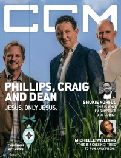

CMnexus: Contemporary Christian culture, music, and media.
|
|
Phillips, Craig, and DeanOn the cover|  | 1 December 2014
CCM Digital | Media coverage:- Dec 1992 in CCM "Faces: Phillips, Craig, and Dean", by April Hefner
- Mar 1993 in The Lighthouse "Phillips, Craig, and Dean", by Beth Blinn
- Jun 1993 in CCM "In Concert: First Assembly of God, St. Charles, MO", by Faith S. Burns
- Apr 1994 in CCM "Phillips, Craig, and Dean", by Perucci Ferraiuolo
- Nov 1995 in CCM "Preachers With Pipes", by Melissa Riddle
- Aug 1997 in CCM "The 5th Element", by Karly Randolph-Pitman
- Oct 2000 in Church Musician Today "A Fresh View of Ministry", by Betty McLellan Jones
- Nov 2004 in CCM "Here To Stay: A Welcome Homecoming", by Robert Mineo
- Nov 2006 in CCM "Insider: Return of the Three Amigos", by Deborah Evans Price
- Jan 2007 in New Man "Guy Gear: Music: Three of a Kind"
- Mar 2012 in CCM Digital "Musicians Corner: Story Behind the Song: Breathe In"
- 1 Dec 2014 in CCM Digital "Phillips, Craig & Dean Point to Jesus", by Rhonda Frye
Albums & reviews:1992: Phillips, Craig & Dean1994: Lifeline1995: Trust1996: Repeat the Sounding Joy1997: Where Strength Begins1998: Favorite Songs of All1999: Restoration2001: Let My Words Be Few2003: Let Your Glory Fall2004: Let The Worshippers Arise2006: Top of My Lungs2009: Fearless2012: Breathe In2013: Hope for All the World2014: Above It All2016: Hymns & Psalms Award Summary (Nominations / Wins)Dove Awards1994 Dove Awards1995 Dove Awards1997 Dove Awards- Inspirational Recorded Song: "Crucified With Christ"
2002 Dove Awards2005 Dove Awards- Praise & Worship Album: Let The Worshippers Arise
2007 Dove Awards- Praise & Worship Album: Top of My Lungs
2010 Dove Awards- Inspirational Album: Fearless
- Worship Song: "Revelation Song"
2011 Dove Awards- Inspirational Recorded Song: "Great Are You Lord"
2015 Dove Awards- Inspirational Album: Above It All
Books about Phillips, Craig, and DeanPublished articles:1 article credited in CCM: 1995. |